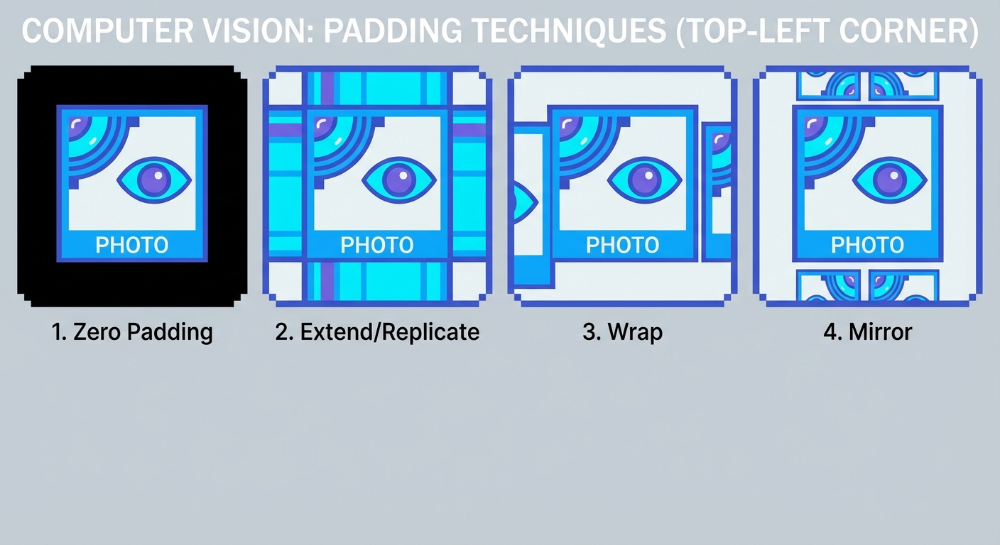

Welcome back! In our previous lesson, we mastered the Convolution Operation. We learned how to slide a kernel window over an image, multiply the values, and sum them up to create a new pixel value.
But we glossed over a tiny, potentially catastrophic detail. Did you spot it?
Imagine you are applying a \(3 \times 3\) kernel to an image. To calculate the value for the pixel at coordinates \((x, y)\), you need to look at its neighbors: \((x-1, y-1)\), \((x, y-1)\), \((x+1, y+1)\), and so on.
This works great in the middle of the image. But what happens when you try to calculate the value for the very first pixel at the top-left corner, \((0,0)\)?
The kernel asks for the value at \((0-1, 0-1)\), or \((-1, -1)\).
The computer looks at the image and says: "That pixel doesn't exist!"
This is known as the Border Problem. When the kernel is centered near the edge, parts of it hang off the image. We can't multiply undefined numbers.
So, what do we do? We have two main choices: give up, or get creative.
The simplest solution is to just ignore the problem. If the kernel doesn't fit entirely inside the image, we simply don't calculate an output for that pixel.
This is called Skipping Outer Pixels or Kernel Crop.
A border handling method where output values are only calculated for pixels where the kernel fits entirely within the input image. This results in an output image smaller than the input.
If you use a \(3 \times 3\) kernel, you lose a 1-pixel border on all sides. If you use a massive \(11 \times 11\) kernel, you lose a 5-pixel border.
While valid, this is often annoying because image sizes change as they flow through a processing pipeline. We usually prefer to keep the image size constant.
If we want to maintain the original image size, we need to invent values for those missing pixels. This process is called Padding.
There are several ways to "hallucinate" these border pixels. Let's look at the most common ones.
Let's break them down:
Reading about it is one thing, but seeing the artifacts is another. Use the tool below to inspect exactly how the computer generates these "ghost" pixels.
Notice the differences? 'Zero Padding' creates a sharp edge (strong gradient) which might look like a dark line after blurring. 'Mirror' tends to blend in the best.
You might think, "Who cares about a few pixels at the edge?"
In photography, Mirror padding is preferred to avoid ugly borders. However, in Deep Learning (Convolutional Neural Networks), Zero Padding is standard. Why? Because it's computationally efficient and easier to implement, even if it introduces a slight "frame" effect.
Noticeable distortions or errors in an image that result from processing. For example, a dark line appearing around an image after blurring with Zero Padding is an artifact.
[10, 20, 50, ... ]. The kernel asks for the pixel at position -1 (one step to the left of 10). What is the value of this ghost pixel for the Mirror and Wrap strategies?Handling borders is a necessary evil of neighborhood operations. You can either lose data size (Crop) or hallucinate data (Pad).
Now that we know how to slide the kernel and where to slide it, we are ready to change the numbers inside the kernel. In the next lesson, we will see how changing those numbers can blur an image or sharpen it!